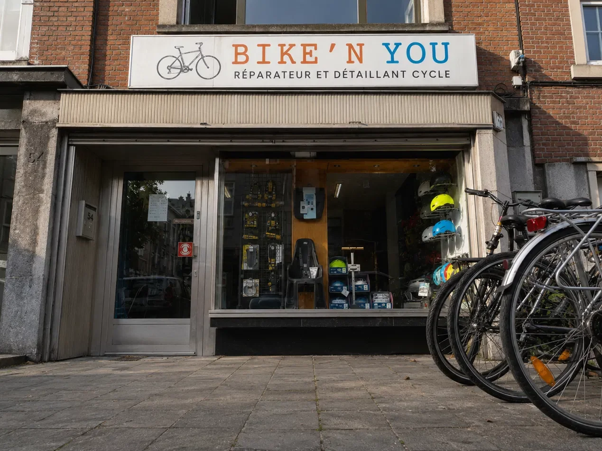
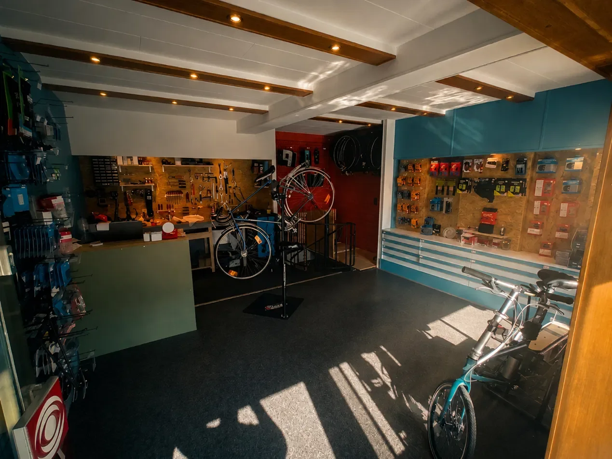
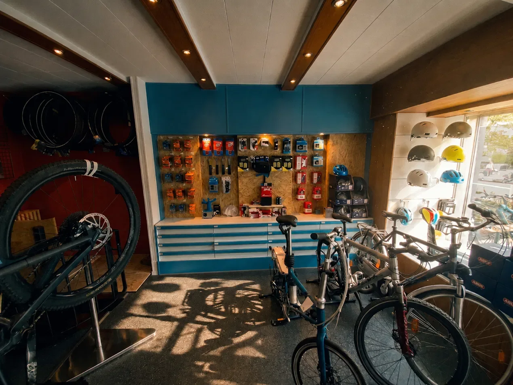

Votre vélo réparé
par quelqu'un qui y tient.
Réparation et entretien toutes marques, avenue Gribaumont à deux pas du métro. Diagnostic honnête, travail soigné, et un vélo qui roule comme il devrait.

✓Atelier de quartier★4,9/5 · GoogleTout ce dont votre vélo a besoin, sous un seul toit
Toutes marques, vélos de ville, VTT, vélos de route et vélos d'enfant. Passez à l'atelier ou appelez pour décrire le problème — on vous dit tout de suite ce qui est faisable.
La réputation se construit vélo par vélo
Nous n'affichons que des chiffres que vous pouvez vérifier vous-même sur notre fiche Google.
Source : fiche Google Business de Bike'n You, avenue L. Gribaumont 54, 1200 Woluwe-Saint-Lambert. Chiffres relevés en juillet 2026.
Ce que disent les cyclistes de Woluwe
Un atelier de quartier, avenue Gribaumont
Bike'n You est un atelier indépendant de réparation et d'entretien de vélos, installé au 54 avenue L. Gribaumont à Woluwe-Saint-Lambert, à quelques minutes à pied de la station de métro Gribaumont.
Les avis publiés en ligne reviennent sur les mêmes points : un accueil direct, des conseils clairs, un travail rapide et des prix corrects.
- Avenue L. Gribaumont 54 — 1200 Woluwe-Saint-Lambert
- Du mardi au samedi — fermé dimanche et lundi
- 4,9/5 sur 153 avis Google


Les réponses aux questions qu'on nous pose le plus
Parlons de votre vélo
Le plus rapide reste le téléphone ou WhatsApp pendant les heures d'ouverture. Le formulaire prépare aussi votre demande par e-mail.